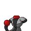
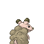
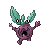
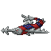
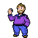
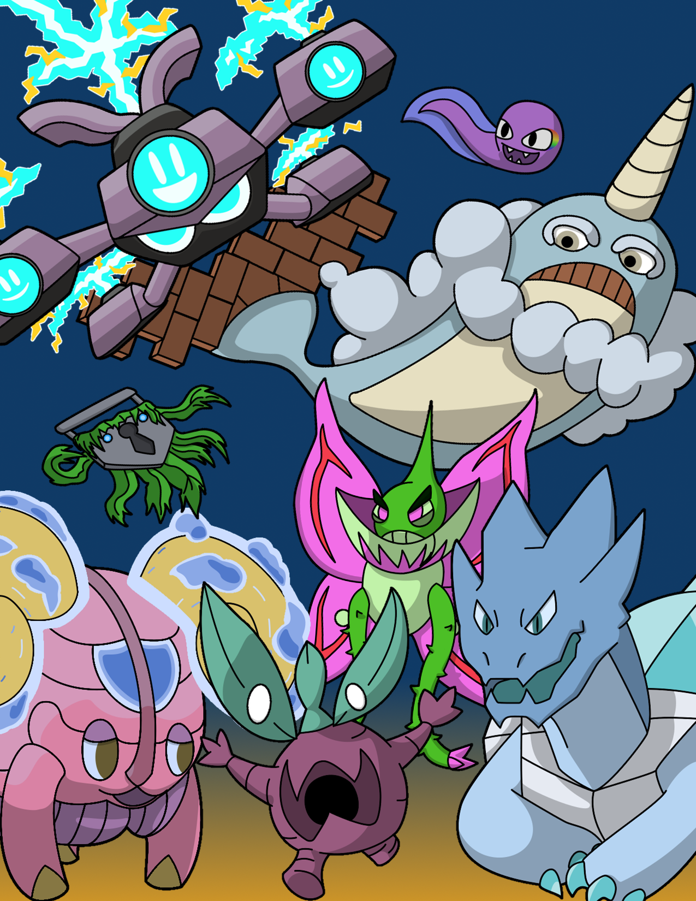

After a long while, I've finally finished up the new poster we'll be using to entice new people to join the Allegheny Fakemon Project (pictured below the body of the post), and I couldn't think of a better time to give a rundown of how the project is going.
We've been steadily completing more and more for the game, especially in the sprite department. I've primarily been working on touching up sprites that we've had near done, and spriting back sprites. I'm pretty happy with the results I've been seeing from all my hard work.
   
That said, we've also been working to gain approval from more professors and staff to use their likenesses for the gym leaders and scholars. We're excited for how campus integral it makes the game, as there will be many familiar faces.

That said, we still have a lot of work to do. We have an entire overworld to build, and a lot of trainer sprites to make. Don't even get me started on how much music our music team will need to make. As a result, that's why we're calling for help from students at Allegheny College. We'll need people who can help build the overworld in RPG Maker XP, people who can help write new original music for the towns and routes, and we'll need people who can help design and sprite the trainers we'll have throughout the game. We're still working to get the first demo build up and running, and we're hopeful we'll have one done by the end of this spring semester.
Anyway, here's that poster I mentioned:

2018 was a tough year: for myself, for the woman I love, for the friends around me, and for many more. The struggles we went through, many of us certainly hope to never go through again. Deaths and near deaths of loved ones, anger directed at those we love, and traumatic experiences are just a few of the things we all went through. In 2018, some of us were hurt by others, and some of us have hurt others.
However, as bad as 2018 was, there were some gems. Loves were rekindled, new loves were found, friendships were forged and strengthened, and futures were shaped for the better. Despite all the bad, we all found something to hold on to and cherish in 2018.
Now we look on to 2019. A year with promise to be better, but only our work will bring that promise to fruition. Here's to a new year, and new work to make it great! Here's to the loves, new and old, that will burn throughout 2019! Here's to the friendships that will be forged and tempered in the coming year! Here's to the challenges we will face, and the people who will turn them from challenges into cherished moments that we'll look back in with fondness.
Happy new year, everyone! Let's make it a good one!